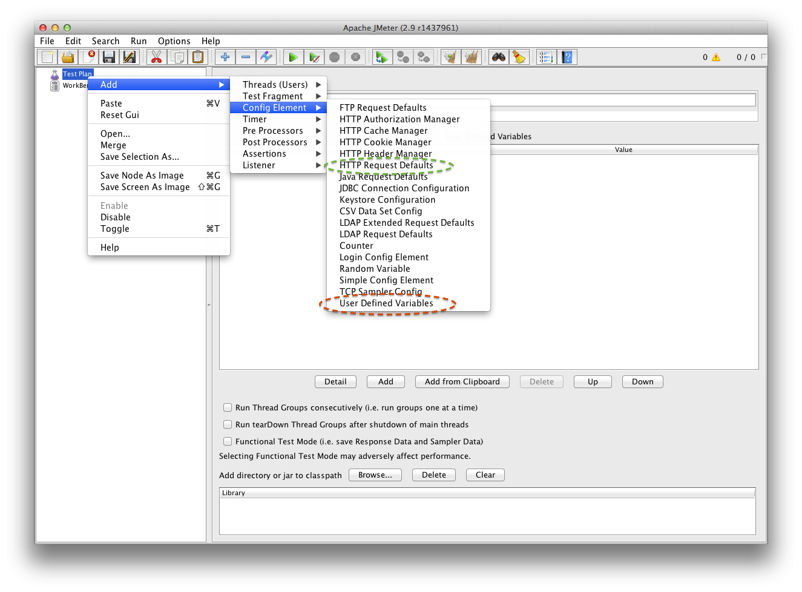

jMeter config elements
Before you begin to testing your app the most important thing is to take care about your organization. If you take care about clarity, the test will be low-maintenance. You should always use clear name convencion, then analyzing results will be easier. If you named all your samples "sample", analyzing results will be imposible. Here you've got an example explains you application "url extraction" and "application root file extraction" to separate config node. You can use ${APP_URL} in each place where you want. Don't forget about define "HTTP Request Defaults" in your test/scenario. This is the best place to define your base parameters like web server adres. Imagine one day you have to change server name in your huge test... So don't waste your time and remember to extract values to variables and define default parameters.

As you can see the simple test contains simple tree of elements. This is:
- TEST PLAN node - contains scenarios
- CONFIG ELEMENTS
- THREAD GROUP represents application's users (it means users online - not competitive)